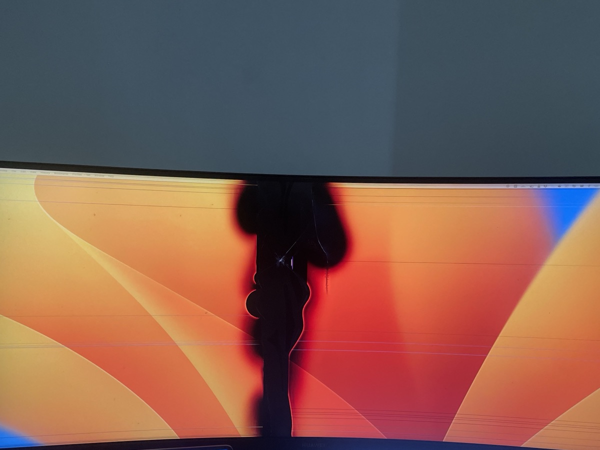
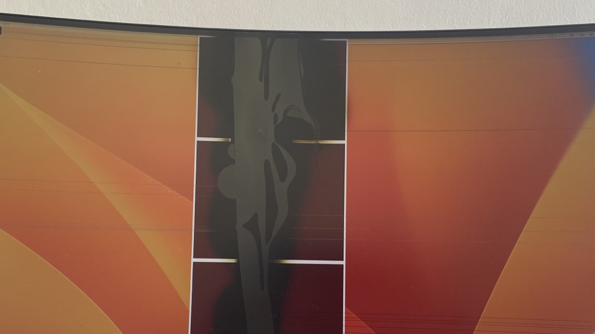
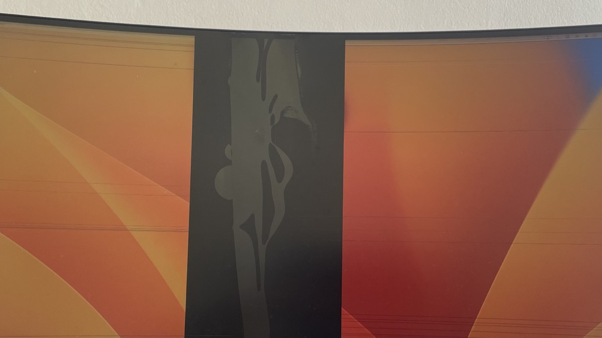

Mark the damaged strip.
Open calibration and drag the guides to mark the damaged strip on the selected display.
ScreenFix blacks out the broken strip and keeps ordinary windows in the space that still works.
Download for Windows x64 Download for macOS Apple Silicon Releases and versioned checksums
Open calibration and drag the guides to mark the damaged strip on the selected display.
Save the calibration to place an opaque black mask over the damaged strip.
ScreenFix keeps ordinary movable windows inside the usable space on either side.


The executable targets ordinary Intel or AMD x64 Windows. It is self-contained, needs no separate .NET runtime, and requires no ZIP extraction.
Download ScreenFix for Windows x64Windows may show SmartScreen because this build is unsigned.
If compressed startup or extraction causes trouble, use the behavior-identical Windows x64 uncompressed fallback.
This build supports macOS 13 or later on Apple Silicon, not Intel Macs. Extract the archive, move ScreenFix to Applications, then Control-click and choose Open for the ad hoc signed build.
Download ScreenFix for macOS Apple SiliconAccessibility permission enables automatic window placement. Masks and calibration continue to work without that permission.
The ScreenFix application does not capture the screen, read window contents, use the network, or send telemetry. It observes only the window geometry needed to keep ordinary windows in usable space.
This landing page uses GoatCounter for privacy-friendly aggregate visit measurement: it can count visits and estimate broad country-level traffic. GoatCounter is the only third-party analytics service used by this website, and the page does not display a public visit counter. GoatCounter does not set tracking cookies. It may briefly process an IP address and user agent in memory for unique-visit and country estimates, but the site owner does not receive or retain visitors’ IP addresses.
No. ScreenFix places an opaque mask over responsive pixels in the damaged strip and manages usable window space. It cannot repair physical panel damage or restore dead pixels.
Protected, administrator-launched, custom, fixed-size, non-movable, borderless, exclusive, and full-screen windows may be left unchanged. Ordinary movable windows are the intended target.
The Windows executable is unsigned, so SmartScreen may warn. The macOS app is ad hoc signed but not notarized, so Gatekeeper may require Control-click and Open.
Accessibility permission is needed only for automatic window placement. The mask and calibration editor continue to work without it.